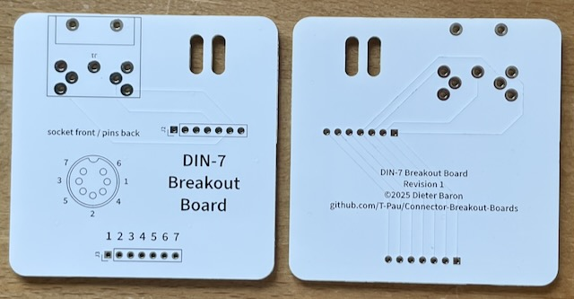

Ich habe die Platine aufgebaut und getestet.

9 Stück verfügbar.
Diese Platine führt alle Pins eines DIN-7 Steckers und einer Buchse an eine Stiftleiste.
| Komponente | Anzahl | Preis | Anbieter |
| Platine | 1 | €1.00 | |
| 1x7 Stiftleiste | 1 | — | |
| Kabelbinder | 1 | — | |
| 90° DIN-7 Buchse | 1 | €0.61 | AliExpress |
| DIN-7 Stecker | 1 | €3.79 | Conrad |
| 7 poliges Kabel, 1m | 0.2 | — | |
| nur Platine | €1.00 | ||
| Teilbausatz | €5.40 |